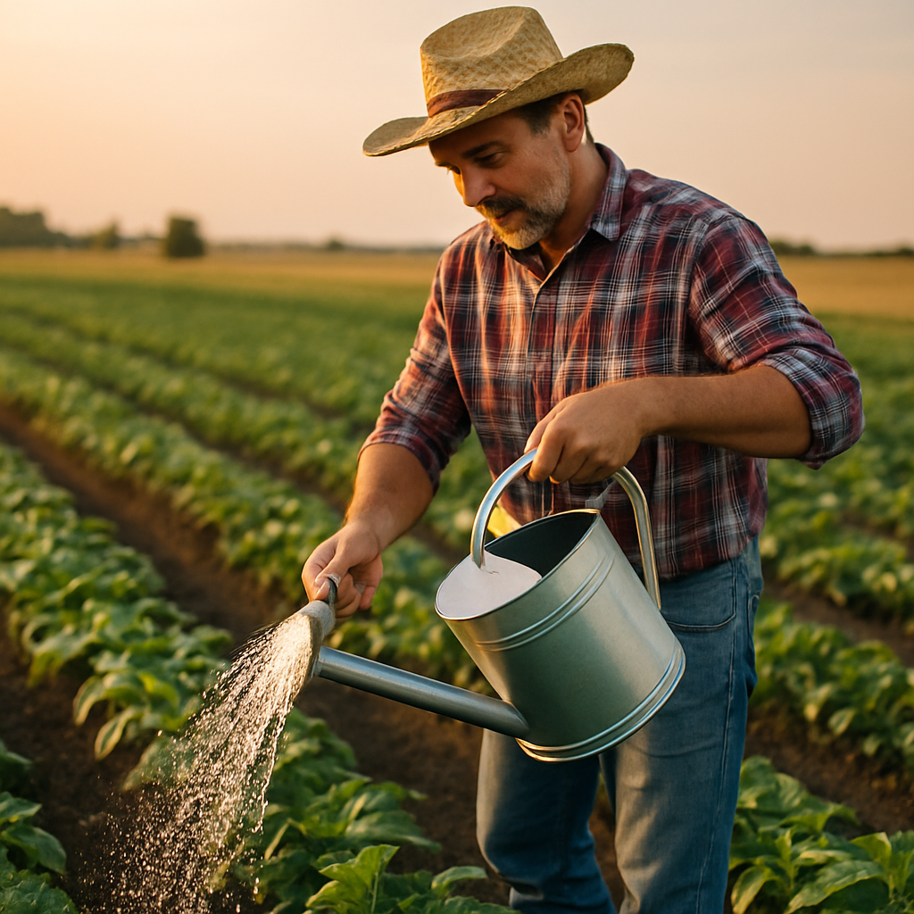

Desafios do Campo
No campo, o acesso à água pode ser limitado devido à infraestrutura precária, longas distâncias até fontes hídricas e falta de saneamento. Muitos produtores dependem de poços, rios ou cisternas, o que pode afetar a qualidade e a regularidade do abastecimento.

Realidade Urbana
Nas cidades, a água geralmente chega por meio de sistemas públicos com tratamento adequado. Porém, há desafios como desperdício, contaminação de mananciais e desigualdade no acesso em áreas periféricas.
Conscientização é Essencial
Promover o uso responsável da água em todos os ambientes é essencial para garantir esse recurso para as futuras gerações. A conexão entre o campo e a cidade deve incluir a cooperação no cuidado com as fontes hídricas.
Consumo Médio de Água (litros por dia)
Dicas para Economizar Água
- Feche a torneira enquanto escova os dentes ou ensaboa as mãos.
- Utilize balde para lavar o carro, evitando uso da mangueira.
- Reaproveite água da chuva para irrigação.
- Conserte vazamentos rapidamente.
- Prefira máquinas de lavar com sensores de consumo.